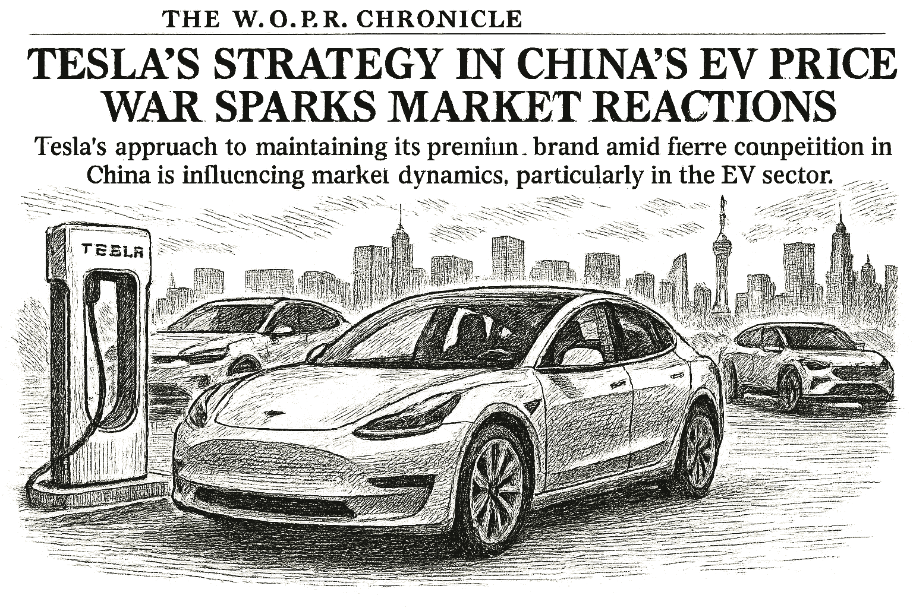

SPY
Current: $778.24Change: +4.98 (+0.64%)
Updated:
Source: yahoo_chartFreshness: fresh


Tesla's approach to maintaining its premium brand amid fierce competition in China is influencing market dynamics, particularly in the EV sector.

Today's Headline: Tesla's Strategy in China's EV Price War Sparks Market Reactions
Setup: Tesla's approach to maintaining its premium brand amid fierce competition in China is influencing market dynamics, particularly in the EV sector.
Primary Topic: Tesla's Market Positioning
Specific Development: Tesla is opting not to engage in the aggressive pricing strategies seen in China's EV market, focusing instead on preserving its premium brand image.
Why Today Is Different: This strategic decision comes at a time when Tesla faces intense competition from local manufacturers, which could reshape investor sentiment and market dynamics.
Secondary Topics: EV Market Competition; Investor Sentiment; Market Dynamics
Tone: analytical
Sectors: Consumer Discretionary; Automotive
Companies: Tesla
Countries Or Regions: China; United States
Macro Themes: Market Volatility; Consumer Behavior
Why This Story: Tesla's strategy could have significant implications for its market share and profitability, influencing broader market trends in the EV sector.
Why This Matters: Bank of America tweaks CoreWeave stock forecast after earnings is the clearest current evidence-led frame for Joshua's observation-only review; missing facts remain explicit intelligence gaps.

Summary: Overnight, global markets reacted to Tesla's strategic decisions, with notable movements in the EV sector.
What Happened Overnight: Tesla's approach to pricing in China has sparked discussions among investors, affecting related stocks.
What Changed Materially: Investor sentiment is increasingly focused on Tesla's competitive strategy.
Which Assets Sectors Are Affected: Tesla; EV manufacturers; Consumer Discretionary
Does It Look Like Noise Or A Real Regime Input: This appears to be a significant regime input rather than mere noise.
Why This Matters: Understanding Tesla's strategy is crucial for assessing future market movements in the EV sector.


- WOPR learning pipeline: Collecting samples
- Candidates evaluated 24h: 0
- Current gate: Evidence
- Notification ledger events in 24h: 6
- Pending orders created/canceled/filled/expired: 1/2/0/0
- Pending lifecycle interpretation: Pending-order cancellations have trackable reasons and no obvious rapid churn pattern.
- Portfolio risk: Label: High / Score: 100.0
- Latest intelligence gap report: intelligence_gap_report_2026-08-09.pdf
Why This Matters: The active gate is Evidence, so the key question is why candidates are stopping before approval, not how to force trades.

- Sentinel role: infrastructure and operational status only.
- State: ONLINE
- Last successful validation: 2026-08-14T14:14:04.006139+00:00
- Payloads accepted/rejected: 11228/0
- Node health score: 100
Why This Matters: Sentinel is ONLINE, so Joshua should use its context only to the extent the latest accepted pulse is fresh and authenticated.

Investment-ready status: No candidates are currently Investment Ready.
#8 NVDA - Governance Hold [Moved Down 5->8]
Investment Readiness: Blocked
Readiness meter: Unknown - The canonical Investment Readiness record supplies no overall percentage; no score was inferred.
Current price: 226.39
Preferred entry: 214.66
Why Joshua Likes It: Unknown
Why Joshua Is Waiting: The latest persisted scanner gate did not pass.; owner Joshua; next event Re-evaluate after the recorded gate clears..
What Changes Joshua's Mind: Clear valuation support; Evidence that the business quality matches the risk being taken; Independent evidence streams pointing the same way; A simple reason the thesis could be wrong; Price/volume leadership confirmation; Cleaner entry timing with positive expected move; Defined stop/target and position size; Lower portfolio concentration or fewer recent cancellations
Board Question (discussion only): If NVDA reaches the recorded price condition <= 214.66, which recorded evidence and governance requirements would still remain?
Canonical evidence: PI pi-fe8470fa9d2044c5; Conference agenda-pending-entry-review-nvda-3df11b8d544a; Columbo columbo-9198890399223ae2272c; Chronicle a6b87f3423e11835; Portfolio Manager COMPLETE; Joshua jdr-934cc51c1ca88c74a7da; Readiness portfolio:NVDA
Thesis evolution: Portfolio fit worsened (61.20 -> 0.00; Portfolio Intelligence); Risk increased (30.80 -> 75.60; Investment Readiness)
#13 PLTR - Governance Hold [Moved Down 11->13]
Investment Readiness: Blocked
Readiness meter: Unknown - The canonical Investment Readiness record supplies no overall percentage; no score was inferred.
Current price: 177.13
Preferred entry: 126.93
Why Joshua Likes It: Unknown
Why Joshua Is Waiting: The latest persisted scanner gate did not pass.; owner Columbo; next event Re-evaluate after the recorded gate clears..
What Changes Joshua's Mind: Clear valuation support; Evidence that the business quality matches the risk being taken; Independent evidence streams pointing the same way; A simple reason the thesis could be wrong; Price/volume leadership confirmation; Cleaner entry timing with positive expected move; Defined stop/target and position size; Lower portfolio concentration or fewer recent cancellations
Board Question (discussion only): If PLTR reaches the recorded price condition <= 126.93, which recorded evidence and governance requirements would still remain?
Canonical evidence: PI pi-fe8470fa9d2044c5; Conference agenda-position-risk-review-pltr-6df46e131c42; Columbo columbo-7e9715babe98a1c384da; Chronicle d8a2682323ab74a3; Portfolio Manager unavailable; Joshua jdr-557b11ab8a073715b75c; Readiness portfolio:PLTR
Thesis evolution: Portfolio fit worsened (61.20 -> 19.00; Portfolio Intelligence); Risk increased (30.80 -> 73.00; Investment Readiness)
#20 IONQ - Governance Hold [Moved Up 24->20]
Investment Readiness: Blocked
Readiness meter: Unknown - The canonical Investment Readiness record supplies no overall percentage; no score was inferred.
Current price: 46.50
Preferred entry: 46.56
Why Joshua Likes It: Unknown
Why Joshua Is Waiting: The latest persisted scanner gate did not pass.; owner Joshua; next event Re-evaluate after the recorded gate clears..
What Changes Joshua's Mind: Clear valuation support; Evidence that the business quality matches the risk being taken; Independent evidence streams pointing the same way; A simple reason the thesis could be wrong; Price/volume leadership confirmation; Cleaner entry timing with positive expected move; Defined stop/target and position size; Lower portfolio concentration or fewer recent cancellations
Board Question (discussion only): If IONQ reaches the recorded price condition <= 46.56, which recorded evidence and governance requirements would still remain?
Canonical evidence: PI pi-fe8470fa9d2044c5; Conference agenda-position-risk-review-ionq-3cf850a17d15; Columbo columbo-3d1cc775dd314145fb5d; Chronicle a6b87f3423e11835; Portfolio Manager COMPLETE; Joshua jdr-d3fd8dfd1552574f29ae; Readiness portfolio:IONQ
#24 DIA - Research Underway [Moved Down 16->24]
Investment Readiness: Not Investment Ready
Readiness meter: Unknown - The canonical Investment Readiness record supplies no overall percentage; no score was inferred.
Current price: Unavailable
Why Joshua Likes It: Using Stanley Druckenmiller's published investment philosophy / known framework, the advisory vote is SCALE_IN because DIA has WOPR score context of 15.7. Available evidence: explanation: No recommendation: confidence is not justified by the current evidence set.; recommendation: no_recommendation; portfolio_fit_score: 90.2. The Chronicle adds background context but no standalone trade instruction.
Why Joshua Is Waiting: Using Stanley Druckenmiller's published investment philosophy / known framework, the advisory vote is SCALE_IN because DIA has WOPR score context of 15.7. Available evidence: explanation: No recommendation: confidence is not justified by the current evidence set.; recommendation: no_recommendation; portfolio_fit_score: 90.2. The Chronicle adds background context but no standalone trade instruction.; owner Columbo; next event Clear valuation support; Evidence that the business quality matches the risk being taken; Independent evidence streams pointing the same way.
What Changes Joshua's Mind: Clear valuation support; Evidence that the business quality matches the risk being taken; Independent evidence streams pointing the same way; A simple reason the thesis could be wrong; Price/volume leadership confirmation; Cleaner entry timing with positive expected move; Defined stop/target and position size; Lower portfolio concentration or fewer recent cancellations
Board Question (discussion only): Which recorded missing evidence item would most change Joshua's current view of DIA?
Canonical evidence: PI pi-fe8470fa9d2044c5; Conference agenda-entry-decision-dia-9de0c6cc78c4; Columbo columbo-e9fb207e62edf4ebb6f4; Chronicle da29d80d78a4e655; Portfolio Manager unavailable; Joshua jdr-4b9005f85dc299a6a7f4; Readiness portfolio:DIA
Thesis evolution: Portfolio fit worsened (61.20 -> 19.00; Portfolio Intelligence); Risk increased (30.80 -> 73.00; Investment Readiness)
Observation only. This section creates no recommendation, order, authority, or execution instruction.

- How might Tesla's strategy impact its long-term market share in China?
- What are the potential risks associated with Tesla's premium pricing approach?
- How are competitors likely to respond to Tesla's market positioning?
- What indicators should Joshua monitor to gauge investor sentiment in the EV sector?
- How might changes in oil prices affect the broader automotive market?

Tesla's strategic decision not to engage in price wars in China reflects a broader trend of premium branding in competitive markets. This could have significant implications for investor sentiment and market dynamics, particularly as competitors may react with their own pricing strategies. The current market context, including declining oil prices and stable Treasury yields, adds layers of complexity to the investment landscape.

The market's focus has shifted towards Tesla's strategic decisions in response to competitive pressures in China.

The evolving narrative around Tesla's market strategy highlights potential risks and opportunities that warrant closer examination.
No new warnings have been issued since yesterday.
Portfolio Construction Review
Current allocation: 75.7 allocated.
Largest sector: Unclassified at 100.0%.
Largest theme: Unclassified at 100.0%.
Diversification: Concentrated (0.0).
Cash allocation: 92.4% unallocated.
Recommended exposure: DELL at portfolio-fit score 0.0.
Portfolio fit: DELL has strong standalone evidence, but it increases portfolio concentration.
Why This Matters: Portfolio Manager evaluates whether an opportunity improves this portfolio; it does not select the investment, vote, or authorize execution.

Today, focus on how Tesla's strategic decisions could reshape the EV market landscape.

| Can trigger trade | no |
| Can modify trade rules | no |
| Can add watch items | yes |
| Can add review questions | yes |
| Can adjust confidence notes | yes |
| Input policy | external_intelligence_plus_sanitized_internal_observations |
| External policy | The Editor-in-Chief synthesizes current world/market context where available and labels unknowns; provider/model provenance remains separate. |
| Internal policy | Joshua/WOPR/Sentinel facts are supplied as sanitized observation-only summaries. |
| Editorial model | gpt-4o-mini |
- Selected by a deterministic daily rotation through symbols already present in the persisted Chronicle snapshot.
- Committee status: watch; confidence: 84.4.
- Next recorded catalyst: Super Micro, Dell, and HP Jump After Strong Lenovo Earnings.
- Related event on the canonical wire: Will Dell Technologies (DELL) Beat Estimates Again in Its Next Earnings Report?
- Iran war a boon for China's e-trucks, fuelling export surge - Reuters
- Desk: geopolitical; source: Reuters; linked symbols: none recorded.
- Published: 8/13/26 16:18 MST.
- High-impact watch: FOMC Minutes Meeting of July 28-29 - 8/19/26 11:00 MST.
- Affected assets: US equities, Treasuries, USD; source: federal_reserve_calendar.
- ZIM earnings: August 19, 2026, before open.
- NVDA earnings: August 26, 2026, after close.
- Energy: 7.46% session performance; source: persisted sector ledger.
- Communication Services: 1.83% session performance; source: persisted sector ledger.
- Technology: 1.40% session performance; source: persisted sector ledger.
- GOLD: 1.90% recorded move; price: 4444.8.
- Session: open; catalyst status: no_verified_catalyst; source: yahoo_chart.
- Tesla's sales figures in China; why it matters: Sales performance will indicate the effectiveness of its pricing strategy.
- State: broad_strength; score: 83.20/100; advance/decline ratio: 2.22.
- Above 50-day average: 68.90%; sample: 119; provider: sentinel_sampled_breadth.
- Decision outcomes evaluated: 16; currently untestable: 0.
- Warning review: still watching 3; confidence calibration: insufficient_sample.
- Current macro regime: narrow_mega_cap_risk_on; change probability: unavailable.
- Risk dashboard: neutral (44/100); breadth: broad_strength; sentiment: neutral.
- Scenario board only - a current-state observation, not a forecast or execution instruction.
- Created the intellectual foundations of value investing and security analysis.
- Published quotation: "The intelligent investor is a realist who sells to optimists and buys from pessimists."
- Published framework: Estimate intrinsic value from verifiable business facts, buy only at a meaningful discount, diversify, and use the margin of safety to protect against analytical error and an uncertain future.
- Committee lens: Graham forces valuation discipline: what evidence supports intrinsic value, where is the margin of safety, and how badly could the estimate be wrong?
- Public philosophy profile only; no participation, endorsement, or current recommendation is implied.
- How are competitors likely to respond to Tesla's market positioning?
- How might Tesla's strategy impact its long-term market share in China?
- What are the potential risks associated with Tesla's premium pricing approach?
- How are competitors likely to respond to Tesla's market positioning?
- What indicators should Joshua monitor to gauge investor sentiment in the EV sector?
- Proposed review: Competitor pricing strategies; why it matters: Competitors' responses will shape the competitive landscape.
- Proposed review: Broader market sentiment towards EVs; why it matters: Investor sentiment will influence stock performance across the sector.
- Canonical instruments reviewed: 24; delayed 6, fresh 18.
- Leading sources: yahoo_chart (21), treasury_official_yield_curve (3).
- Snapshot recorded: 8/14/26 06:59 MST.
Tesla's Strategy in China's EV Price War Sparks Market Reactions
Storm meter: Cautious
#8 NVDA - Governance Hold [Moved Down 5->8]
Observation mode: observation_only
Watch: Tesla's sales figures in China; why it matters: Sales performance will indicate the effectiveness of its pricing strategy.
Question: How might Tesla's strategy impact its long-term market share in China?